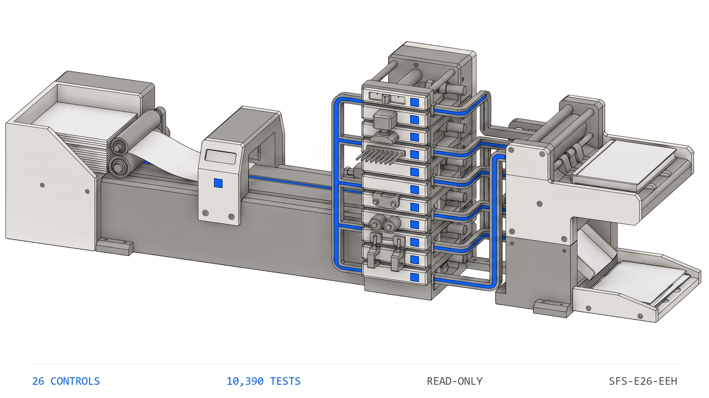

SFS-E26-EEH · ENERGY TAX CREDIT · REV 2026-07-24 · PRODUCTION
PRODUCTION = runnable end-to-end, CI-backed, full test suite passing. All data fictional and seeded.
Energy-Efficient Home Credit
Did the unit close in the period, and was it certified?
A homebuilder earns the IRC §45L credit one dwelling unit at a time, and it has to prove, unit by unit, that each claimed unit clears two gates at once -- it closed inside the fiscal-year window being filed, and it holds an energy certificate from a certified RESNET/HERS rater -- and then that every dollar stacked on top of that count was recomputed, not typed. The gross credit is nothing more than the number of qualifying units times the dated statutory per-unit amount, and profit addback, tax effect, net benefit and partner split are each arithmetic on that product. This engine reads the six artifacts the credit record carries -- the per-unit register, the credit worksheet, the units-by-period roll-forward, the partner allocation, the closings schedule and the final certification report -- and runs twenty-six deterministic controls over them. Is the file complete and are the period and sunset dates readable, is the unit register sound and every unit tied to a project the worksheet carries, did every claimed unit close in the period and on or before the statutory sunset, is every claimed unit certified and its certificate signed by a named rater, is any unit claimed again that a prior filing already took, does each unit and each project's gross credit re-derive as units times the dated rate, does the report's certified units times rate tie its total credit, do the project counts tie the register and the region subtotals and grand totals foot, does the roll-forward identity hold, do the addback, tax effect and net benefit re-derive, do the partner shares sum to the net benefit and re-derive from ownership, and do the report, worksheet and closings schedule reconcile on one credited-unit number. It compares every credit figure with exact ==, treats the sunset gate as <= so a unit closing on the sunset date is still eligible, and never writes to a source artifact.
The §45L credit looks like the safest number on a footed worksheet: units times two thousand dollars, then a few lines of tax arithmetic beneath it. That is exactly why it drifts. None of the ways it goes wrong look wrong in a column of dwelling counts. A unit is claimed that closed a year before the fiscal window opened, or after the statutory sunset that sits inside the window, or was never certified by a rater -- the computation still foots and the units underneath it do not qualify. The same dwelling is claimed in two successive period filings, each internally consistent, the overlap visible only across them. And the rollup -- gross credit, the report's certified-unit tie-out, the roll-forward identity, the net-benefit derivation, the partner allocation -- is stated on a number nobody recomputed from the unit register beneath it. The engine rebuilds every credit figure from the register and the dated statutory rate and compares with exact ==, checks the two eligibility gates as genuinely independent because the sunset falls mid-period, ships a planted-defect file for every registered control, and states its benchmark as a command rather than a claim. A unit claimed out of period, past the sunset, or uncertified is invisible until an examiner recomputes the credit the builder already took.
Twelve control families run in registry order over each credit file. The first proves the others had something to read and that the period and sunset dates are legible, because a control that passes on absent evidence reports assurance it never performed.
a credit a cent off the re-derivation is a break, not a rounding band
What it does for you
plain terms
A homebuilder claims the IRC §45L energy-efficient home credit one dwelling unit at a time, and it has to prove, unit by unit, that each claimed unit clears two gates at once -- it closed (close-of-escrow) inside the fiscal-year window being filed, and it holds an energy certificate from a certified RESNET/HERS rater -- and then that every dollar stacked above that count was recomputed rather than typed. The gross credit is nothing more than the qualifying-unit count times the dated statutory per-unit amount, and the profit addback, the tax effect at the effective rate, the net benefit and the partner split are each arithmetic on that product. Three failures hide inside that, none of which look wrong on a footed worksheet. A unit is claimed that closed a year before the window opened, or after the statutory sunset that sits inside the window, or was never certified by a rater -- the computation still foots and the units underneath it do not qualify. The same dwelling is claimed in two successive period filings, each internally consistent, the overlap visible only across them. And the rollup -- the worksheet's gross credit, the report's certified-unit tie-out, the roll-forward identity, the net-benefit derivation or the partner allocation -- is stated on a number nobody recomputed from the unit register underneath it. None of these are judgment calls. They are equalities and comparisons -- a close date against a period window and a sunset with <=, a gross credit against units times the dated rate with exact ==, a stated total against its re-derivation -- which a deterministic control settles better than a spreadsheet inherited by whoever tracks the credit this year.
The seeded demo runs every control over every credit file7. The CLI generates twenty-eight fictional credit files -- one clean baseline and one carrying each of the twenty-seven planted defects -- then runs all twenty-six controls over each. The clean file returns PASS with no flags; every defect file returns REVIEW or FAIL and names the control it tripped along with the reason that control exists.
The two eligibility gates are genuinely independent8. The statutory sunset is seeded inside the fiscal-year window, so a unit can close in the period yet after the sunset. One defect file moves a unit's close date before the window opened and trips elig_close_in_period; another moves it past the sunset but inside the year and trips elig_within_sunset -- proving the two gates catch different failures, each checked with <= at its boundary.
The credit is recomputed, not read back9. A defect file adds a claimed unit to the register without re-deriving the worksheet, so the worksheet's qualifying-unit count no longer ties the register. roll_project_units rebuilds the count from the claimed register units and fails, proving the worksheet is recomputed from the dwellings beneath it rather than trusted as stated.
Functional block diagram
engineering · each block links to its source
Plain terms
Seeded Credit Files. fictional §45L credit files enter the control registry
Structural Precondition. is the credit file complete and the period and sunset dates legible
Unit Register. is the register sound and every unit attributable
Eligibility Gating. did every claimed unit close in the period and before the sunset
Certification. is every claimed unit certified and its certificate signed
No Double-Count. was any unit already claimed in a prior filing
Statutory Rate. does the credit re-derive as units times the dated rate
Report Tie-Out. does the report's units times rate tie its total credit
Roll-Up Tie-Out. do the counts, subtotals and grand totals foot
Roll-Forward. does the roll-forward identity hold and what remains to close
Net-Benefit Derivation. do addback, tax effect and net benefit re-derive
Partner Allocation. do the partner shares sum and re-derive from ownership
Cross-Artifact Reconciliation. do the artifacts reconcile on one credited-unit number
Register, Worksheet & Statute. the artifacts and dated rate every rule resolves against
Verdict and Findings. every finding, with the reason it exists, ends at a person
Engineering
Seeded Credit Files. generate_corpus writes one clean baseline plus one planted-defect file for every registered control, twenty-eight files in total. Only the units -- their close dates, certification and claim status -- the projects, the roll-forward columns, the partner ownership and the statutory parameters are stated; each unit's credited amount, every project's gross credit, addback, tax effect and net benefit, the region and grand totals, the partner shares, the closings counts and the final-report tie-out are re-derived through the same credit kernel the engine later recomputes with, so the relationships the engine tests are the same relationships that produced the data.
Structural Precondition. One control. FAILs a file missing any of the six artifact types or carrying a duplicate, an unreadable or inverted period window, an unreadable sunset date, or a missing / non-integer statute, so no downstream rule holds vacuously on absent evidence.
Unit Register. Three controls: unique unit ids, the required descriptive fields present, and a worksheet project for every unit the register carries.
Eligibility Gating. Two independent controls, because the statutory sunset sits inside the fiscal-year window: the close-of-escrow date falls in the period, and it falls on or before the sunset, each checked with <= at its boundary.
Certification. Two controls: every claimed unit carries a RESNET/HERS certificate reference and is marked certified, and every certified claim names the rater id who signed the energy determination.
No Double-Count. One control: no claimed unit appears in the closings schedule's prior-period list, because the §45L credit is taken once per dwelling and the overlap is visible only across successive filings.
Statutory Rate. Two controls: each unit's credited amount is the dated statutory per-unit rate (or zero if unclaimed), and each project's gross credit is exactly its qualifying units times that rate, compared to the cent with exact ==.
Report Tie-Out. One control: the final certification report's total certified-unit count times the statutory per-unit rate equals the total credit received stated on its face.
Roll-Up Tie-Out. Three controls: each project's worksheet unit count ties its claimed register units, every region subtotal ties its projects' gross credit, and the grand totals foot from the project lines.
Roll-Forward. Three controls: total units = closings per period + remaining, the period windows are ordered and disjoint with one column each, and a project with units still to close in a future period is flagged for the next filing.
Net-Benefit Derivation. Three controls: the profit addback equals the gross credit, the tax effect is minus the credit at the effective rate with truncating division, and the net benefit is the gross credit plus the tax effect.
Partner Allocation. Two controls: the partner shares sum to the worksheet's total net benefit, and each share re-derives from its ownership basis points at the largest-remainder method that lands the residual cent deterministically.
Cross-Artifact Reconciliation. Three controls: the report, worksheet and closings schedule tie on one credited-unit count, no project credits more units than it closed, and a project that closed more than it credited is flagged as a certification gap worth chasing.
Register, Worksheet & Statute. The unit register carries each unit's id, project, address, close-of-escrow date, certification and claim status; the credit worksheet carries the per-project units-times-rate line and the region and grand totals; the roll-forward, partner allocation, closings schedule and final report carry the derived counts and figures; and the file-level statute carries the dated per-unit amount, the effective rate, the period window and the sunset date. Every eligibility, rate, roll-up, net-benefit, allocation and reconciliation control resolves against these through the shared credit kernel.
Verdict and Findings. Findings roll up per credit file: any FAIL is FAIL, FLAGs without FAILs are REVIEW, clean is PASS. The CLI exit code is the verdict, so a pipeline can gate on it. Reports carry no timestamps or absolute paths, which is what makes the committed report diffable.
Instruction set
every public command
Command
Operation
Output
Exit
Artifacts
python run.py
regenerate the seeded fictional corpus, run all twenty-six controls, write both reports
per-file verdicts and every actionable finding, then the overall verdict
2 for the bundled corpus, which carries a planted defect for every control by design
energy_report.json, energy_report.md, samples/
python -m energy_engine samples
analyze an existing folder of credit files without regenerating it
100 percent of controls with a planted defect no control ships without a file demonstrating it firing
Control characteristics
engineering
Plain terms
The engine has no write path and therefore no autonomy to gate. It produces findings; a person decides whether a unit is carried into the claim and whether a certificate or closing is chased.
Demo gate. FAIL on the bundled corpus, by design -- it carries a planted defect for every registered control
Severity
Verdict
Action
No findings above PASS
PASS
carry the mechanically clean credit file into the documented sign-off and filing review
One or more FLAG, no FAIL
REVIEW
a human resolves each flag; a project with units still to close in a future period and a certification gap where more units closed than were certified both land here
One or more FAIL
FAIL
the unit or figure is not carried into the claim until the failing control is cleared -- a unit out of period, past the sunset or uncertified, a double count, or a credit that does not recompute
Read-only: credit files are parsed and never written back, so the engine cannot introduce the break it reports.
Integer cents throughout, compared with exact ==; there is no tolerance band on a credit figure, and a cent off the re-derivation is reported as a break.
A credit figure that should be integer cents but is not produces an AMOUNT_INVALID finding contained to the one row it was read on, rather than being coerced into the number the engine is meant to audit.
One credit kernel: the controls and the generator share the kernel in energy_engine.credit, so a determination cannot disagree with the data that produced it.
The two eligibility gates are independent: the sunset sits inside the fiscal-year window and each gate is checked with <= at its boundary, so a unit closing exactly on the sunset date is still eligible.
Deterministic and byte-stable: same inputs produce the same findings in the same order, with no timestamps or absolute paths in any output.
Absent evidence is never a passing control; a missing artifact fails completeness rather than letting the controls that read it pass unread.
Operating limits
what it refuses to do
The engine never files a return, claims a credit, issues or requests a certificate, contacts a rater, or writes to a source artifact. It reads the credit file and stops.14
It reads the six artifacts the credit record emits. It does not connect to a rating provider, a closing system, a general ledger or the underlying certificates.15
It proves a unit clears the mechanical gates -- closed in period, within the sunset, certified with a named rater -- not that the unit genuinely meets the §45L energy-saving requirement or that its certificate is authentic. That judgment is a rater's and a reviewer's.16
It re-derives the credit at the dated statutory per-unit amount and effective rate the file carries; it does not decide whether that rate or that effective tax rate is the correct one for the year and taxpayer.17
It takes the closing and certification records at face value: it confirms the register and worksheet foot and reconcile, not that a closing actually occurred. All shipped data is fictional and the fiscal year is set in a fictional future.18
See it run
brand animation

The Energy-Efficient Home Credit engine tile states the question that has to hold unit by unit: every claimed dwelling closed inside the fiscal-year window and on or before the statutory sunset, certified by a named rater, claimed once, with the gross credit, the report tie-out, the roll-up totals, the net benefit and the partner shares all recomputed from the unit register and the dated statutory rate.
One conversation: you describe the work that consumes your team's month; we tell you plainly what this engine can take over, what it can't, and what a scoped first phase would cost. Your people keep approval authority.